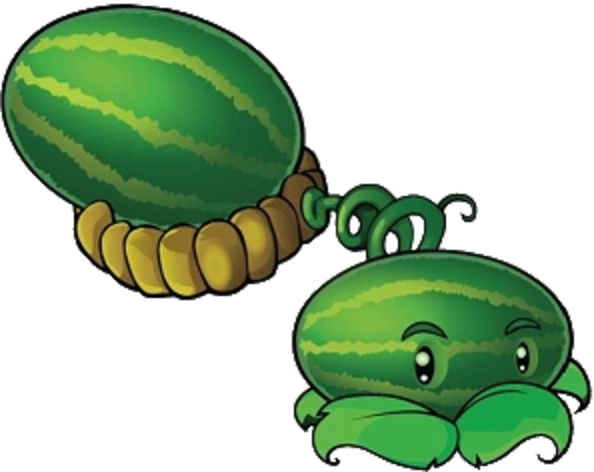

Свежие арбузы
прямо с приморской бахчи
Мы выращиваем арбузы в одном из самых тёплых районов Приморья — без долгой дороги, без перекупщиков и без потерь вкуса. С поля — на прилавок за несколько часов.

Наш маскот — весёлый арбуз, который всегда готов в бой за хороший урожай 🍉
Кнопка «Заказать» пока не работает. Она станет активной в будущем: здесь появится форма заказа, расчёт доставки и оплата. Пока связаться с нами можно по контактам ниже или на почту egorpazenko3256@mail.ru.
О компании
«Арбузная долина» — фермерское хозяйство в Приморском крае. Мы занимаемся выращиванием и реализацией арбузов, используя интенсивную технологию: рассаду, капельное орошение и мульчирующую плёнку. Это позволяет получать стабильный урожай даже в условиях муссонного климата.
Местное производство
Бахча находится в Приханкайской низменности — самом тёплом районе края. Свежий арбуз попадает к покупателю в день сбора, а не после недели в дороге.
Капельное орошение
Полив по расчётной норме 1250–1550 м³ на гектар и мульчирование гряд сохраняют влагу и защищают растения от переувлажнения и сорняков.
Проверенные сорта
Ранние и среднеранние сорта и гибриды: «Кримсон Свит», «Холодок», «Скорик», «Подарок Северу» — они успевают созреть до августовских дождей.
Контроль качества
Анализ почвы, севооборот с возвратом бахчи на участок не чаще одного раза в 5–6 лет, биологическая защита растений от болезней.
Калибровка и упаковка
Сортировка по фракциям, упаковка в октабины по 400–500 кг и многооборотную тару — удобно для торговых сетей и оптовых баз.
Доставка по краю
Самовывоз с поля и склада в Спасском округе, доставка транспортом покупателя или нашей логистикой до Владивостока и других городов края.
Цены оптом
Цены указаны за килограмм на сезон 2027 года. Продукция откалибрована и упакована. Отгрузка — с поля или со склада в Спасском муниципальном округе.
| Условия поставки | Мин. партия | Цена |
|---|---|---|
| Опт с поля, самовывоз покупателем | от 1 тонны | 28 ₽/кг |
| Опт с базы во Владивостоке (с доставкой) | от 500 кг | 38 ₽/кг |
| Розница и продажа с поля, ярмарки | от 50 кг | 55 ₽/кг |
| Ранний арбуз из теплицы (май — июнь) | от 100 кг | 120 ₽/кг |
| Свежая зелень, салаты, редис из теплицы (ноябрь — апрель) | от 20 кг | 150 ₽/кг |
| Нестандартная продукция (на переработку) | от 1 тонны | 8 ₽/кг |
* Цены ориентировочные. Арбуз с поля продаётся в сезон сбора — август и сентябрь; ранний арбуз из теплицы — в мае и июне; свежая зелень и салаты — с ноября по апрель. Итоговая цена зависит от объёма партии, калибра и условий доставки. Для торговых сетей и постоянных покупателей предусмотрены индивидуальные условия.
Как мы работаем
От заявки до отгрузки — четыре простых шага.
Заявка
Вы оставляете заявку с нужным объёмом, калибром и датой отгрузки. Пока заявки принимаются по почте и телефону.
Договор и цена
Фиксируем цену и объём в договоре поставки, согласуем способ доставки и упаковку.
Сбор урожая
Собираем арбузы под конкретную партию, калибруем и упаковываем в день отгрузки.
Отгрузка
Самовывоз с поля или доставка до базы покупателя по Приморскому краю в течение суток после сбора.
Круглый год
Открытый грунт работает с мая по сентябрь, поэтому мы добавили вторую очередь — тепличный модуль площадью 0,1 га. Он загружает хозяйство все двенадцать месяцев и даёт свежую продукцию даже зимой, когда на прилавках почти всё привозное.
Зима
Свежая зелень, салаты, редис и лук на перо из теплицы — сезон, когда зелень в Приморье дороже всего.
Весна
Своя рассада для всех 10 гектаров и первый в крае арбуз — в мае и июне, когда своего арбуза ещё нет и цена максимальна.
Лето
Теплица отдаёт огурцы и томаты, а поле готовится к главному урожаю.
Осень
Главный урожай — 200 тонн арбузов с открытого грунта и второй оборот зелени к росту зимних цен.
Приморье относится к самой светлой световой зоне России, поэтому досветка в теплице нужна лишь для удлинения светового дня. Зимний арбуз под лампами мы считали — он не окупается, поэтому зимой теплица работает на зелени.
Хотите арбузы оптом?
Оформление заказов на сайте пока недоступно — эта возможность появится в будущем. Сейчас мы принимаем заявки напрямую: напишите или позвоните, и мы рассчитаем стоимость партии.
Кнопка пока неактивна. В будущем здесь появятся оформление заказа, оплата и доставка.